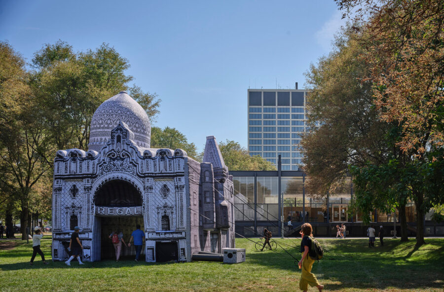

Floating Monuments: for Mecca
Chicago Architecture Biennial participant Floating Museum presents Floating Monuments: for Mecca, installed inside the historic Daniel Burnham Roundhouse at The DuSable Black History Museum and Education Center. Within this setting, the work brings the memory of the Mecca Flats into conversation with this historical institution dedicated to Black history and cultural memory. for Mecca conjures the memory of a once-thriving apartment complex in Chicago’s Bronzeville neighborhood that served as a vital center of Black cultural life before its demolition in 1952. Through architectural scale and temporary form, the inflatable resurrects the presence of a building, and a community, erased by urban renewal, transforming absence into something tangible and shared. for Mecca nestled within the DuSable’s Roundhouse creates a conversation between past and present Black cultural sites. Visitors are invited to step inside for Mecca and experience it as a space for gathering, reflection, and collective memory, where architecture becomes a vessel for honoring Black life and cultural legacy.
Floating Museum is an art collective that creates new models exploring relationships between art, community, architecture, and public institutions. Using site-responsive art, design, and programming they explore the potential in these relationships, considering the infrastructure, history, and aesthetics of a space.
Jeremiah Hulsebos-Spofford is a visual artist and associate professor of visual art at Indiana University Northwest. He is also a co-director and co-founder of the collective Floating Museum. His work has been shown at the American Academy of Arts and Letters, Museum of Contemporary Art Chicago, the Art Institute of Chicago, and the Malmo Konstmuseum, among other spaces. He has held fellowships at the Sculpture Space, the MacDowell Colony, Vermont Studio Center, the Brown Foundation Program at the Dora Maar House, and the Skowhegan School of Sculpture and Painting. His work has been supported by grants from the Foundation for Contemporary Arts, the Harpo Foundation, the Propeller Fund, the Chauncey and Marion Deering McCormick Foundation, an Illinois Arts Council Fellowship, and a Fulbright Fellowship in Sicily.
Faheem Majeed is an artist, curator, educator, and non-profi t administrator whose work focuses on institutional critique and centers collaboration as a tool to engage communities in meaningful dialogue. He is an Assistant Professor of Art at the University of Illinois Chicago, and serves as the Co-Director and Co-Founder of Floating Museum, an arts collective and non-profi t that creates new models to explore relationships between art, community, architecture, and public institutions. Majeed’s sculptures highlight marginalized objects, histories, people, and places into powerful narratives that challenge and recontextualize their value, fostering dialogue and broader social change.
Andrew Schachman designs environments, infrastructures, and installations. He is the executive co-director of two organizations that are experimental spaces for delivering arts and culture within existing metropolitan networks: Floating Museum and Fieldwork Collaborative Projects. Trained as an architect, he designed and managed projects for the offi ces of Zaha Hadid, Perkins and Will, Carol Ross Barney, and Doug Garofalo. His projects have received numerous awards including the Distinguished Building Award from the American Institute of Architects and the Richard H. Driehaus Foundation Award for Architectural Excellence in Community Design. As Principal of Studio Andrew Schachman, he completed the design for the Palais de Tokyo’s exhibition, Singing Stones, in the roundhouse of the DuSable Museum of African American History in Chicago. Schachman is a lecturer in urban design at the University of Chicago.
Co-Director of Floating Museum and Chicago’s inaugural Poet Laureate, interdisciplinary artist avery r. young [him, him, his] is also a Walder’s Foundation Platform awardee, and American Poet Laureate Fellow. His poetry, performance and composition have been featured in several journals, exhibitions and festivals. His full length recording tubman. is the soundtrack to his collection of poetry, neckbone: visual verses. He is the composer and librettist for a new commissioned work from The Lyrics Opera of Chicago titled safronia.